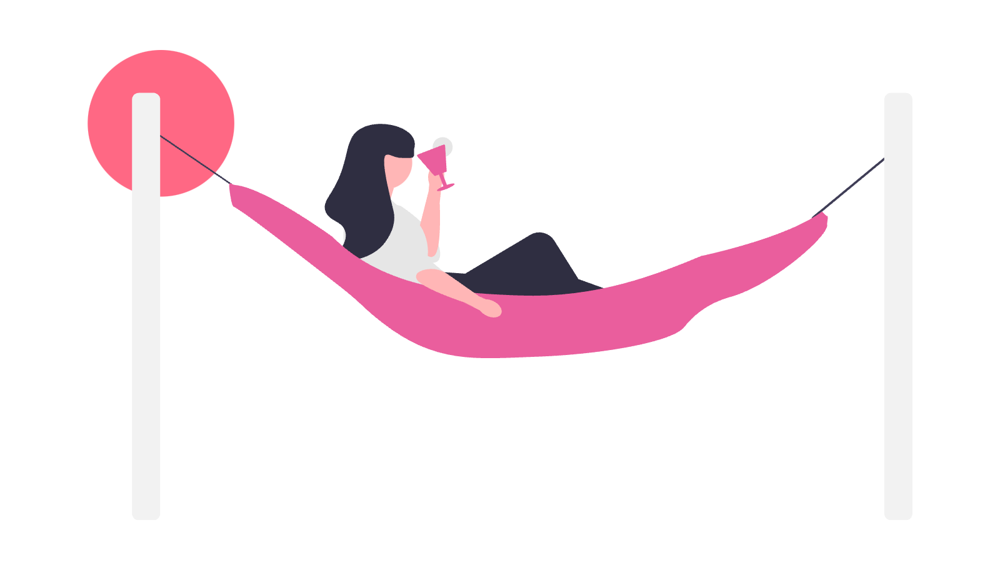

WORKS

Walking App（LP模写）
ドットインストールの教材にて制作したランディングページです。
HTML/CSSを使用し、レイアウト構築や余白設計、基本的なUIの実装を学びました。

ポートフォリオサイト（コード）
本ポートフォリオサイトのソースコードです。
HTML/CSSを使用して構築しており、レイアウトや余白設計を意識してコーディングしています。
現在もデザインや構成の改善を行いながらブラッシュアップしています。
GitHubにてコードをご覧いただけます。

LP模写（コード）
ドットインストールの教材をもとに制作したランディングページのソースコードです。
HTML/CSSを使用し、基本的なレイアウト構築やスタイリングを学びました。
コーディングの理解を深めることを目的として取り組みました。